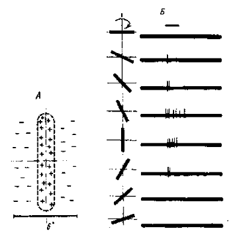

Зрительная система
Основы психофизиологии., М. ИНФРА-М, 1998, с.57-72, Глава 2 Отв.ред. Ю.И. Александров
2.1. Строение и функции оптического аппарата глаза
Глазное яблоко имеет шарообразную форму, что облегчает его повороты для наведения на рассматриваемый объект и обеспечивает хорошую фокусировку изображения на всей светочувствительной оболочке глаза - сетчатке. На пути к сетчатке лучи света проходят через несколько прозрачных сред роговицу, хрусталик и стекловидное тело. Определённая кривизна и показатель преломления роговицы и в меньшей мере хрусталика определяют преломление световых лучей внутри глаза. На сетчатке получается изображение, резко уменьшенное и перевернутое вверх ногами и справа налево (рис. 4.1 а). Преломляющую силу любой оптической системы выражают в диоптриях (D). Одна диоптрия равна преломляющей силе линзы с фокусным расстоянием 100 см. Преломляющая сила здорового глаза составляет 59D при рассматривании далеких и 70,5D при рассматривании близких предметов.
Рис. 4.1. Ход лучей от объекта и построение изображения на сетчатке глаза (а). Схема рефракции в нормальном (б), близоруком (в) и дальнозорком (г} глазу. Оптическая коррекция близорукости (д) и дальнозоркости (е)
2.2. Аккомодация
Аккомодацией называют приспособление глаза к ясному видению объектов, расположенных на разном расстоянии (подобно фокусировке в фотографии). Для ясного видения объекта необходимо, чтобы его изображение было сфокусировано на сетчатке (рис. 4.1 б). Главную роль в аккомодации играет изменение кривизны хрусталика, т.е. его преломляющей способности. При рассматривании близких предметов хрусталик становится более выпуклым. Механизмом аккомодации является сокращение мышц, изменяющих выпуклость хрусталика.
2.3. Аномалии рефракции глаза
Две главные аномалии рефракции глаза близорукость (миопия) и дальнозоркость (гиперметропия). Эти аномалии обусловлены не недостаточностью преломляющих сред глаза, а изменением длины глазного яблока (рис. 4.1 в, г). Если продольная ось глаза слишком длинна (рис. 4.1 в), то лучи от далёкого объекта сфокусируются не на сетчатке, а перед ней, в стекловидном теле. Такой глаз называется близоруким. Чтобы ясно видеть вдаль, близорукий должен поместить перед глазами вогнутые стекла, которые отодвинут сфокусированное изображение на сетчатку (рис. 4.1 д). В отличие от этого, в дальнозорком глазу (рис. 4.1 г) продольная ось укорочена, и поэтому лучи от далёкого объекта фокусируются за сетчаткой, Этот недостаток может быть компенсирован увеличением выпуклости хрусталика. Однако при рассматривании близких объектов аккомодационные усилия дальнозорких людей недостаточны. Именно поэтому для чтения они должны надевать очки с двояковыпуклыми линзами, усиливающими преломление света (рис. 4.1 е).
2.4. Зрачок и зрачковый рефлекс
Зрачок - это отверстие в центре радужной оболочки, через которое свет проходит в глаз. Он повышает чёткость изображения на сетчатке, увеличивая глубину резкости глаза и устраняя сферическую аберрацию. Расширившийся при затемнении зрачок на свету быстро сужается ("зрачковый рефлекс"), что регулирует поток света, попадающий в глаз. Так, на ярком свету зрачок имеет диаметр 1,8 мм, при средней дневной освещённости он расширяется до 2,4 мм, а в темноте - до 7,5 мм. Это ухудшает качество изображения на сетчатке, но увеличивает абсолютную чувствительность зрения. Реакция зрачка на изменение освещённости имеет адаптивный характер, так как стабилизирует освещённость сетчатки в небольшом диапазоне. У здоровых людей зрачки обоих глаз имеют одинаковый диаметр. При освещении одного глаза зрачок другого тоже суживается; подобная реакция называется содружественной.
2.5. Структура и функции сетчатки
Сетчатка - это внутренняя светочувствительная оболочка глаза. Она имеет сложную многослойную структуру (рис. 4.2). Здесь расположены два вида фоторецепторов (палочки и колбочки) и несколько видов нервных клеток. Возбуждение фоторецепторов активирует первую нервную клетку сетчатки - биполярный нейрон. Возбуждение биполярных нейронов активирует ганглиозные клетки сетчатки, передающие свои импульсы в подкорковые зрительные центры. В процессах передачи и переработки информации в сетчатке участвуют также горизонтальные и амакриновые клетки. Все перечисленные нейроны сетчатки с их отростками образуют нервный аппарат глаза, который участвует в анализе и переработке зрительной информации. Именно поэтому сетчатку называют частью мозга, вынесенной на периферию.
2.6. Структура и функции слоёв сетчатки
Клетки пигментного эпителия образуют наружный, наиболее далекий от света, слой сетчатки. Они содержат меланосомы, придающие им чёрный цвет. Пигмент поглощает излишний свет, препятствуя его отражению и рассеиванию, что способствует чёткости изображения на сетчатке. Пигментный эпителий играет решающую роль в регенерации зрительного пурпура фоторецепторов после его обесцвечивания, в постоянном обновлении наружных сегментов зрительных клеток, в защите рецепторов от светового повреждения, а также в переносе к ним кислорода и питательных веществ.
Фоторецепторы. К слою пигментного эпителия изнутри примыкает слой зрительных рецепторов: палочек и колбочек. В каждой сетчатке человека находится 6-7 млн. колбочек и 110-125 млн. палочек. Они распределены в сетчатке неравномерно. Центральная ямка сетчатки - фовеа (fovea centralis) содержит только колбочки. По направлению к периферии сетчатки количество колбочек уменьшается, а количество палочек увеличивается, так что на дальней периферии имеются только палочки. Колбочки функционируют в условиях больших освещённостей, они обеспечивают дневное и цветовое зрение ; более светочувствительные палочки ответственны за сумеречное зрение.
Цвет воспринимается лучше всего при действии света на центральную ямку сетчатки, в которой расположены почти исключительно колбочки. Здесь же и наибольшая острота зрения. По мере удаления от центра сетчатки восприятие цвета и пространственное разрешение постепенно уменьшается. Периферия сетчатки, на которой находятся исключительно палочки, не воспринимает цвета. Зато световая чувствительность колбочкового аппарата сетчатки во много раз меньше, чем у палочкового. Поэтому в сумерках из-за резкого понижения колбочкового зрения и преобладания периферического палочкового зрения мы не различаем цвет ("ночью все кошки серы").
Зрительные пигменты. В палочках сетчатки человека содержится пигмент родопсин, или зрительный пурпур, максимум спектра поглощения которого находится в области 500 нанометров (нм). В наружных сегментах трёх типов колбочек (сине-, зелено- и красночувствительных) содержатся три типа зрительных пигментов, максимумы спектров поглощения которых находятся в синей (420 нм), зеленой (531 нм) и красной (558 нм) областях спектра. Красный колбочковый пигмент получил название йодопсин. Молекула зрительного пигмента состоит из белковой части (опсина) и хромофорной части (ретиналь, или альдегид витамина "А"). Источником ретиналя в организме служат каротиноиды; при их недостатке нарушается сумеречное зрение ("куриная слепота").
2.7. Нейроны сетчатки
Фоторецепторы сетчатки синаптически связаны с биполярными нервными клетками (см. рис. 4.2). При действии света уменьшается выделение медиатора из фоторецептора, что гиперполяризует мембрану биполярной клетки. От неё нервный сигнал передаётся на ганглиозные клетки, аксоны которых являются волокнами зрительного нерва.
Рис. 4.2. Схема строения сетчатки глаза:
1 - палочки; 2 - колбочки; 3 - горизонтальная клетка; 4 - биполярные клетки; 5 - амакриновые клетки; 6 - ганглиозные клетки; 7 - волокна зрительного нерва
На 130 млн. фоторецепторных клеток приходится только 1 млн. 250 тыс. ганглиозных клеток сетчатки. Это значит, что импульсы от многих фоторецепторов сходятся (конвергируют) через биполярные нейроны к одной ганглиозной клетке. Фоторецепторы, соединённые с одной ганглиозной клеткой, образуют её рецептивное поле [Хьюбел, 1990; Физиол. зрения, 1992]. Таким образом, каждая ганглиозная клетка суммирует возбуждение, возникающее в большом количестве фоторецепторов. Это повышает световую чувствительность сетчатки, но ухудшает её пространственное разрешение. Лишь в центре сетчатки (в районе центральной ямки) каждая колбочка соединена с одной биполярной клеткой, а та, в свою очередь, соединена с одной ганглиозной клеткой. Это обеспечивает высокое пространственное разрешение центра сетчатки, но резко уменьшает его световую чувствительность.
Взаимодействие соседних нейронов сетчатки обеспечивается горизонтальными и амакриновыми клетками, через отростки которых распространяются сигналы, меняющие синаптическую передачу между фоторецепторами и биполярами (горизонтальные клетки) и между биполярами и ганглиозными клетками (амакрины). Амакриновые клетки осуществляют боковое торможение между соседними ганглиозными клетками. В сетчатку приходят и центробежные, или эфферентные, нервные волокна, приносящие к ней сигналы из мозга. Эти импульсы регулируют проведение возбуждения между биполярными и ганглиозными клетками сетчатки.
2.8. Нервные пути и связи в зрительной системе
Из сетчатки зрительная информация по волокнам зрительного нерва устремляется в мозг. Нервы от двух глаз встречаются у основания мозга, где часть волокон переходит на противоположную сторону (зрительный перекрёст, или хиазма). Это обеспечивает каждое полушарие мозга информацией от обоих глаз: в затылочную долю правого полушария поступают сигналы от правых половин каждой сетчатки, а в левое полушарие от левой половины каждой сетчатки (рис. 4.3).
Рис. 4.3. Схема зрительных путей от сетчатки глаза до первичной зрительной коры:
ЛПЗ - левое поле зрения; ППЗ - правое поле зрения; тф - точка фиксации взора; лг - левый глаз; пг - правый глаз; зн - зрительный нерв; х - зрительный перекрёст, или хиазма; от - оптический тракт; НКТ - наружное коленчатое тело; ЗК - зрительная кора; лп - левое полушарие; пп - правое полушарие
После хиазмы зрительные нервы называются оптическими трактами и основное количество их волокон приходит в подкорковый зрительный центр - наружное коленчатoe тело (НКТ). Отсюда зрительные сигналы поступают в первичную проекционную область зрительной коры (стриарная кора, или поле 17 по Бродману). Зрительная кора состоит из ряда полей, каждое из которых обеспечивает свои, специфические функции, получая как прямые, так и опосредованные сигналы от сетчатки и в общем сохраняя её топологию, или ретинотопию (сигналы от соседних участков сетчатки попадают в соседние участки коры).
2.9. Электрическая активность центров зрительной системы
При действии света в рецепторах, а затем и в нейронах сетчатки генерируются электрические потенциалы, отражающие параметры действующего раздражителя (рис. 4.4а, а). Суммарный электрический ответ сетчатки глаза на свет называют электроретинограммой (ЭРГ).
Рис. 4.4. Электроретинограмма (а) и вызванный светом потенциал (ВП) зрительной коры (б):
а,b,с,d на (а) - волны ЭРГ; стрелками указаны моменты включения света. Р 1 - Р 5 - позитивные волны ВП, N 1 - N 5 - негативные волны ВП на (б)
Она может быть зарегистрирована от целого глаза: один электрод помещают на поверхность роговой оболочки, а другой - на кожу лица вблизи глаза (либо на мочку уха). В ЭРГ хорошо отражаются интенсивность, цвет, размер и длительность действия светового раздражителя. Поскольку в ЭРГ отражена активность почти всех клеток сетчатки (кроме ганглиозных клеток), этот показатель широко используется для анализа работы и диагностики заболеваний сетчатки.
Возбуждение ганглиозных клеток сетчатки приводит к тому, что по их аксонам (волокнам зрительного нерва) в мозг устремляются электрические импульсы. Ганглиозная клетка сетчатки это первый в сетчатке нейрон "классического" типа, генерирующий распространяющиеся импульсы. Описано три основных типа ганглиозных клеток: отвечающие на включение света (on - реакция), его выключение (off - реакция) и на то и другое (on-off - реакция). В центре сетчатки рецептивные поля ганглиозных клеток маленькие, а на периферии сетчатки они значительно больше по диаметру. Одновременное возбуждение близко расположенных ганглиозных клеток приводит к их взаимному торможению: ответы каждой клетки становятся меньше, чем при одиночном раздражении. В основе этого эффекта лежит латеральное или боковое торможение (см. гл. 3). Благодаря круглой форме рецептивные поля ганглиозных клеток сетчатки производят так называемое поточечное описание сетчаточного изображения: оно отображается очень тонкой дискретной мозаикой, состоящей из возбужденных нейронов.
Нейроны подкоркового зрительного центра возбуждаются, когда к ним приходят импульсы из сетчатки по волокнам зрительного нерва. Рецептивные поля этих нейронов также круглые, но меньшего размера, чем в сетчатке. Пачки импульсов, генерируемые ими в ответ на вспышку света, короче, чем в сетчатке. На уровне НКТ происходит взаимодействие афферентных сигналов, пришедших из сетчатки, с эфферентными сигналами из зрительной коры, а также из ретикулярной формации от слуховой и других сенсорных систем. Это взаимодействие помогает выделять наиболее существенные компоненты сигнала и, возможно, участвует в организации избирательного зрительного внимания (см. гл. 9).
Импульсные разряды нейронов НКТ по их аксонам поступают в затылочную часть полушарий головного мозга, в которой расположена первичная проекционная область зрительной коры (стриарная кора). Здесь у приматов и человека происходит значительно более специализированная и сложная, чем в сетчатке и в НКТ, переработка информации. Нейроны зрительной коры имеют не круглые, а вытянутые (по горизонтали, вертикали или по диагонали) рецептивные поля (рис. 4.5) небольшого размера [Хьюбел, 1990].

Рис. 4.5 . Рецептивное поле нейрона зрительной коры мозга кошки (А) и ответы этого нейрона на вспыхивающие в рецептивном поле световые полоски разной ориентации (Б). А - плюсами отмечена возбудительная зона рецептивного поля, а минусами - две боковые тормозные зоны. Б - видно, что этот нейрон наиболее сильно реагирует на вертикальную и близкую к ней ориентацию
Благодаря этому они способны выделять из изображения отдельные фрагменты линий с той или иной ориентацией и расположением и избирательно на них реагировать (детекторы ориентаций). В каждом небольшом участке зрительной коры по её глубине сконцентрированы нейроны с одинаковой ориентацией и локализацией рецептивных полей в поле зрения. Они образуют ориентационную колонку нейронов, проходящую вертикально через все слои коры. Колонка - пример функционального объединения корковых нейронов, осуществляющих сходную функцию. Группа соседних ориентационных колонок, нейроны которых имеют перекрывающиеся рецептивные поля, но разные предпочитаемые ориентации, образует так называемую сверхколонку. Как показывают исследования последних лет, функциональное объединение отдалённых друг от друга нейронов зрительной коры может происходить также за счет синхронности их разрядов. Недавно в зрительной коре найдены нейроны с избирательной чувствительностью к крестообразным и угловым фигурам, относящиеся к детекторам 2-гo порядка. Таким образом, начала заполняться "ниша" между описывающими пространственные признаки изображения простыми ориентационными детекторами и детекторами высшего порядка (лица), найденными в височной коре.
В последние годы хорошо исследована так называемая "пространственно-частотная" настройка нейронов зрительной коры [Глезер, 1985; Физиол. зрения, 1992]. Она заключается в том, что многие нейроны избирательно реагируют на появившуюся в их рецептивном поле решётку из светлых и тёмных полос определённой ширины. Так, имеются клетки, чувствительные к решётке из мелких полосок, т.е. к высокой пространственной частоте. Найдены клетки с чувствительностью к разным пространственным частотам. Считается, что это свойство обеспечивает зрительной системе способность выделять из изображения участки с разной текстурой [Глезер, 1985].
Многие нейроны зрительной коры избирательно реагируют на определённые направления движения (дирекциональные детекторы) либо на какой-то цвет (цветооппонентные нейроны), а часть нейронов лучше всего отвечает на относительную удалённость объекта от глаз. Информация о разных признаках зрительных объектов (форма, цвет, движение) обрабатывается параллельно в разных частях зрительной коры.
Для оценки передачи сигналов на разных уровнях зрительной системы часто используют регистрацию суммарных вызванных потенциалов (ВП), которые у человека можно одновременно отводить от сетчатки и от зрительной коры (см. рис. 4.4 б). Сравнение вызванного световой вспышкой ответа сетчатки (ЭРГ) и ВП коры позволяет оценить работу проекционного зрительного пути и установить локализацию патологического процесса в зрительной системе.
2.10. Световая чувствительность
Абсолютная чувствительность зрения . Чтобы возникло зрительное ощущение, свет должен обладать некоторой минимальной (пороговой) энергией. Минимальное количество квантов света, необходимое для возникновения ощущения света в темноте , колеблется от 8 до 47. Одна палочка может быть возбуждена всего 1 квантом света. Таким образом, чувствительность рецепторов сетчатки в наиболее благоприятных условиях световосприятия предельна. Одиночные палочки и колбочки сетчатки различаются по световой чувствительности незначительно. Однако количество фоторецепторов, посылающих сигналы на одну ганглиозную клетку, в центре и на периферии сетчатки различно. Количество колбочек в рецептивном поле в центре сетчатки примерно в 100 раз меньше количества палочек в рецептивном поле на периферии сетчатки. Соответственно и чувствительность палочковой системы в 100 раз выше, чем у колбочковой.
2.11. Зрительная адаптация
При переходе от темноты к свету наступает временное ослепление, а затем чувствительность глаза постепенно снижается. Это приспособление зрительной системы к условиям яркой освещённости называется световой адаптацией. Обратное явление (темновая адаптация) наблюдается, когда из светлого помещения человек переходит в почти не освещённое помещение. В первое время он почти ничего не видит из-за пониженной возбудимости фоторецепторов и зрительных нейронов. Постепенно начинают выявляться контуры предметов, а затем различаются и их детали, так как чувствительность фоторецепторов и зрительных нейронов в темноте постепенно повышается.
Повышение световой чувствительности во время пребывания в темноте происходит неравномерно: в первые 10 мин она увеличивается в десятки раз, а затем, в течение часа - в десятки тысяч раз. Важную роль в этом процессе играет восстановление зрительных пигментов. Так как в темноте чувствительны только палочки, слабо освещённый предмет виден лишь периферическим зрением. Существенную роль в адаптации, помимо зрительных пигментов, играет переключение связей между элементами сетчатки. В темноте площадь возбудительного центра рецептивного поля ганглиозной клетки увеличивается из-за ослабления кольцевого торможения, что приводит к увеличению световой чувствительности. Световая чувствительность глаза зависит и от влияний, идущих со стороны мозга. Освещение одного глаза понижает световую чувствительность неосвещённого глаза. Кроме того, на чувствительность к свету оказывают влияние также звуковые, обонятельные и вкусовые сигналы.
2.12. Дифференциальная чувствительность зрения
Если на освещённую поверхность с яркостью I падает добавочное освещение dI, то, согласно закону Вебера, человек заметит разницу в освещённости только если dI/I = K, где K константа, равная 0,01-0,015. Величину dI/I называют дифференциальным порогом световой чувствительности. Отношение dI/I при разных освещённостях постоянно и означает, что для восприятия разницы в освещённости двух поверхностей одна из них должна быть ярче другой на 1 - 1,5 %.
2.13. Яркостной контраст
Взаимное латеральное торможение зрительных нейронов (см. гл. 3) лежит в основе общего, или глобального яркостного контраста. Так, серая полоска бумаги, лежащая на светлом фоне, кажется темнее такой же полоски, лежащей на тёмном фоне. Это объясняется тем, что светлый фон возбуждает множество нейронов сетчатки, а их возбуждение притормаживает клетки, активированные полоской. Наиболее сильно латеральное торможение действует между близко расположенными нейронами, создавая эффект локального контраста. Происходит кажущееся усиление перепада яркости на границе поверхностей разной освещённости. Этот эффект называют также подчёркиванием контуров, или эффектом Маха: на границе яркого светового поля и более тёмной поверхности можно видеть две дополнительные линии (ещё более яркую линию на границе светлого поля и очень тёмную линию на границе тёмной поверхности).
2.14. Слепящая яркость света
Слишком яркий свет вызывает неприятное ощущение ослепления. Верхняя граница слепящей яркости зависит от адаптации глаза: чем дольше была темновая адаптация, тем меньшая яркость света вызывает ослепление. Если в поле зрения попадают очень яркие (слепящие) объекты, то они ухудшают различение сигналов на значительной части сетчатки (так, на ночной дороге водителей ослепляют фары встречных машин). При тонких работах, связанных с напряжением зрения (длительное чтение, работа на компьютере, сборка мелких деталей), следует пользоваться только рассеянным светом, не ослепляющим глаз.
2.15. Инерция зрения, слитие мельканий, последовательные образы
Зрительное ощущение появляется не мгновенно. Прежде чем возникнет ощущение, в зрительной системе должны произойти многократные преобразования и передача сигналов. Время "инерции зрения", необходимое для возникновения зрительного ощущения, в среднем равно 0,03 - 0,1 с. Следует отметить, что это ощущение также исчезает не сразу после того как прекратилось раздражение - оно держится ещё некоторое время. Если в темноте водить по воздуху горящей спичкой, то мы увидим светящуюся линию, так как быстро следующие одно за другим световые раздражения сливаются в непрерывное ощущение. Минимальная частота следования световых стимулов (например, вспышек света), при которой происходит объединение отдельных ощущений, называется критической частотой слития мельканий. При средних освещённостях эта частота равна 10-15 вспышкам в 1 с. На этом свойстве зрения основаны кино и телевидение: мы не видим промежутков между отдельными кадрами (24 кадра в 1 с в кино), так как зрительное ощущение от одного кадра ещё длится до появления следующего. Это и обеспечивает иллюзию непрерывности изображения и его движения.
Ощущения, продолжающиеся после прекращения раздражения, называются последовательными образами. Если посмотреть на включённую лампу и закрыть глаза, то она видна ещё в течение некоторого времени. Если же после фиксации взгляда на освещённом предмете перевести взгляд на светлый фон, то некоторое время можно видеть негативное изображение этого предмета, т.е. светлые его части - тёмными, а тёмные - светлыми (отрицательный последовательный образ). Это объясняется тем, что возбуждение от освещённого объекта локально тормозит (адаптирует) определённые участки сетчатки; если после этого перевести взор на равномерно освещённый экран, то его свет сильнее возбудит те участки, которые не были возбуждены ранее.
2.16. Цветовое зрение
Весь видимый нами спектр электромагнитных излучений заключен между коротковолновым (длина волны 400 нм) излучением, которое мы называем фиолетовым цветом, и длинноволновым излучением (длина волны 700 нм), называемым красным цветом. Остальные цвета видимого спектра (синий, зеленый, жёлтый и оранжевый) имеют промежуточные значения длины волны. Смешение лучей всех цветов даёт белый цвет. Он может быть получен и при смешении двух так называемых парных дополнительных цветов: красного и синего, жёлтого и синего. Если произвести смешение трёх основных цветов (красного, зеленого и синего), то могут быть получены любые цвета.
Максимальным признанием пользуется трёхкомпонентная теория Г. Гельмгольца, согласно которой цветовое восприятие обеспечивается тремя типами колбочек с различной цветовой чувствительностью. Одни из них чувствительны к красному цвету, другие - к зеленому, а третьи - к синему. Всякий цвет оказывает воздействие на все три цветоощущающих элемента, но в разной степени. Эта теория прямо подтверждена в опытах, в которых измеряли поглощение излучений с разной длиной волны в одиночных колбочках сетчатки человека.
Частичная цветовая слепота была описана в конце XVIII в. Д. Дальтоном, который сам страдал ею. Поэтому аномалию цветовосприятия обозначили термином "дальтонизм". Дальтонизм встречается у 8% мужчин; его связывают с отсутствием определённых генов в определяющей пол непарной у мужчин X-хромосоме. Для диагностики дальтонизма, важной при профессиональном отборе, используют полихроматические таблицы. Люди, страдающие им, не могут быть полноценными водителями транспорта, так как они могут не различать цвет огней светофоров и дорожных знаков. Существуют три разновидности частичной цветовой слепоты: протанопия, дейтеранопия и тританопия. Каждая из них характеризуется отсутствием восприятия одного из трёх основных цветов. Люди, страдающие протанопией ("краснослепые"), не воспринимают красного цвета, сине-голубые лучи кажутся им бесцветными. Лица, страдающие дейтеранопией ("зеленослепые"), не отличают зеленые цвета от тёмно-красных и голубых. При тританопии (редко встречающейся аномалии цветового зрения) не воспринимаются лучи синего и фиолетового цвета. Все перечисленные виды частичной цветовой слепоты хорошо объясняются трёхкомпонентной теорией. Каждый из них является результатом отсутствия одного из трёх колбочковых цветовоспринимающих веществ.
2.17. Восприятие пространства
Остротой зрения называется максимальная способность различать отдельные детали объектов. Её определяют по наименьшему расстоянию между двумя точками, которые различает глаз, т.е. видит отдельно, а не слитно. Нормальный глаз различает две точки, расстояние между которыми составляет 1 угловую минуту. Максимальную остроту зрения имеет центр сетчатки - жёлтое пятно. К периферии от него острота зрения намного меньше. Острота зрения измеряется при помощи специальных таблиц, которые состоят из нескольких рядов букв или незамкнутых окружностей различной величины. Острота зрения, определённая по таблице, выражается в относительных величинах, причём нормальная острота принимается за единицу. Встречаются люди, обладающие сверхостротой зрения (visus больше 2).
Поле зрения. Если фиксировать взглядом небольшой предмет, то его изображение проецируется на жёлтое пятно сетчатки. В этом случае мы видим предмет центральным зрением. Его угловой размер у человека составляет всего 1,5-2 угловых градуса. Предметы, изображения которых падают на остальные участки сетчатки, воспринимаются периферическим зрением. Пространство, видимое глазом при фиксации взгляда в одной точке, называется полем зрения. Измерение границы поля зрения производят по периметру. Границы поля зрения для бесцветных предметов составляют книзу 70, кверху - 60, внутрь - 60 и кнаружи - 90 градусов. Поля зрения обоих глаз у человека частично совпадают, что имеет большое значение для восприятия глубины пространства. Поля зрения для различных цветов неодинаковы и меньше, чем для чёрно-белых объектов.
Бинокулярное зрение - это зрение двумя глазами. При взгляде на какой-либо предмет у человека с нормальным зрением не возникает ощущения двух предметов, хотя и имеется два изображения на двух сетчатках. Изображение каждой точки этого предмета попадает на так называемые корреспондирующие, или соответственные участки двух сетчаток, и в восприятии человека два изображения сливаются в одно. Если надавить слегка на один глаз сбоку, то начнёт двоиться в глазах, потому что нарушилось соответствие сетчаток. Если же смотреть на близкий предмет, то изображение какой-либо более отдалённой точки попадает на неидентичные (диспаратные) точки двух сетчаток. Диспарация играет большую роль в оценке расстояния и, следовательно, в видении глубины пространства. Человек способен заметить изменение глубины, создающее сдвиг изображения на сетчатках на несколько угловых секунд. Бинокулярное слитие или объединение сигналов от двух сетчаток в единый нервный образ происходит в первичной зрительной коре мозга.
Оценка величины объекта. Величина знакомого предмета оценивается как функция величины его изображения на сетчатке и расстояния предмета от глаз. В случае, когда расстояние до незнакомого предмета оценить трудно, возможны грубые ошибки в определении его величины.
Оценка расстояния. Восприятие глубины пространства и оценка расстояния до объекта возможны как при зрении одним глазом (монокулярное зрение), так и двумя глазами (бинокулярное зрение). Во втором случае оценка расстояния гораздо точнее. Некоторое значение в оценке близких расстояний при монокулярном зрении имеет явление аккомодации. Для оценки расстояния имеет значение также то, что образ знакомого предмета на сетчатке тем больше, чем он ближе.
Роль движения глаз для зрения. При рассматривании любых предметов глаза двигаются. Глазные движения осуществляют 6 мышц, прикреплённых к глазному яблоку. Движение двух глаз совершается одновременно и содружественно. Рассматривая близкие предметы, необходимо сводить (конвергенция), а рассматривая далекие предметы - разводить зрительные оси двух глаз (дивергенция). Важная роль движений глаз для зрения определяется также тем, что для непрерывного получения мозгом зрительной информации необходимо движение изображения на сетчатке. Импульсы в зрительном нерве возникают в момент включения и выключения светового изображения. При длящемся действии света на одни и те же фоторецепторы импульсация в волокнах зрительного нерва быстро прекращается и зрительное ощущение при неподвижных глазах и объектах исчезает через 1-2 с. Если на глаз поставить присоску с крохотным источником света, то человек видит его только в момент включения или выключения, так как этот раздражитель движется вместе с глазом и, следовательно, неподвижен по отношению к сетчатке. Чтобы преодолеть такое приспособление (адаптацию) к неподвижному изображению, глаз при рассматривании любого предмета производит неощущаемые человеком непрерывные скачки (саккады). Вследствие каждого скачка изображение на сетчатке смещается с одних фоторецепторов на другие, вновь вызывая импульсацию ганглиозных клеток. Продолжительность каждого скачка равна сотым долям секунды, а амплитуда его не превышает 20 угловых градусов. Чем сложнее рассматриваемый объект, тем сложнее траектория движения глаз. Они как бы "прослеживают" контуры изображения (рис. 4.6), задерживаясь на наиболее информативных его участках (например, в лице это глаза). Кроме скачков, глаза непрерывно мелко дрожат и дрейфуют (медленно смещаются с точки фиксации взора). Эти движения также очень важны для зрительного восприятия.
Рис. 4.6. Траектория движения глаз (Б) при осматривании изображения Нефертити (А)